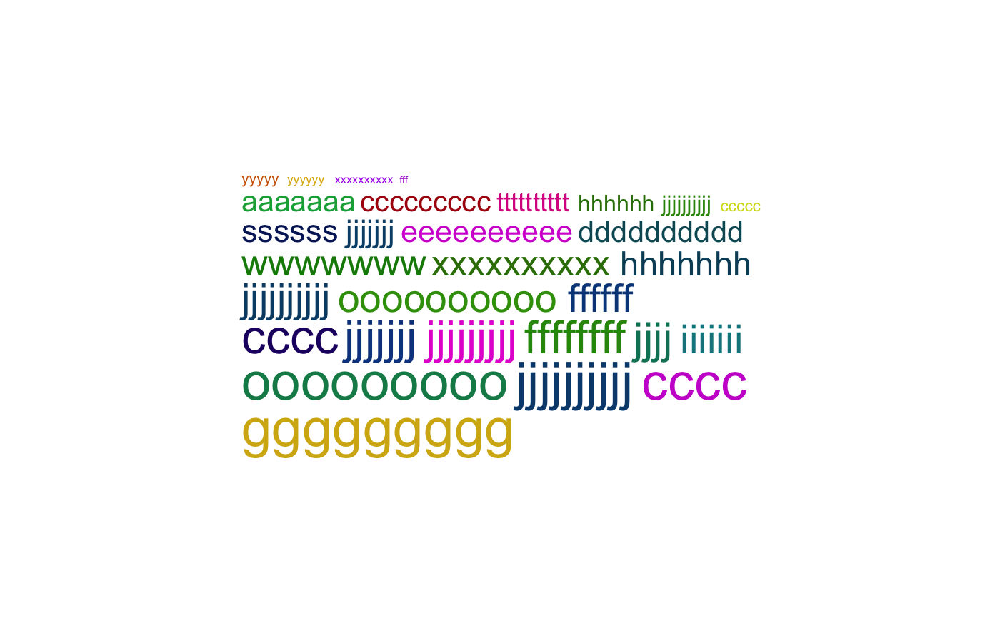
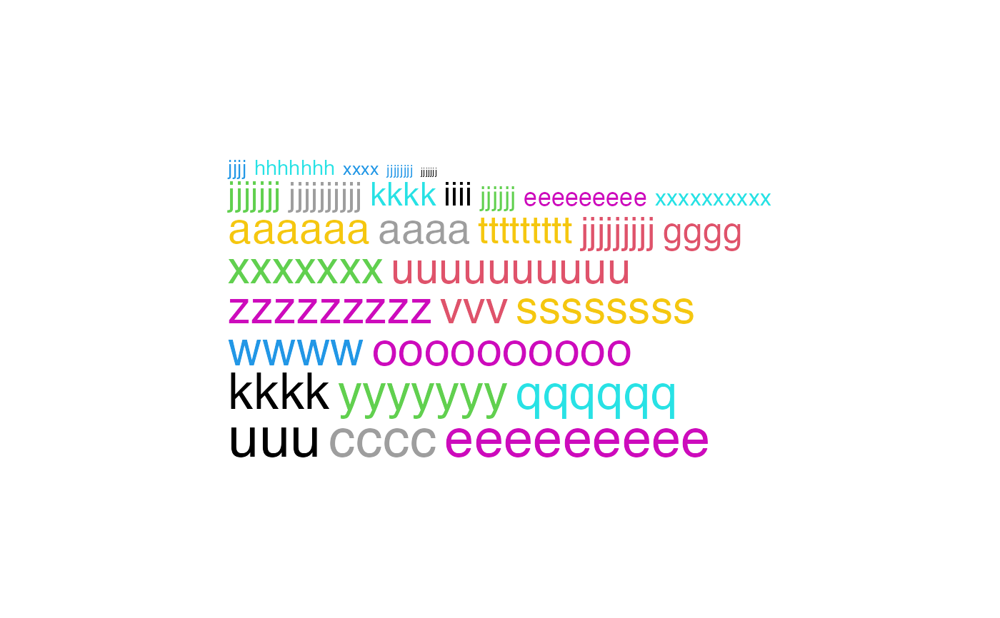
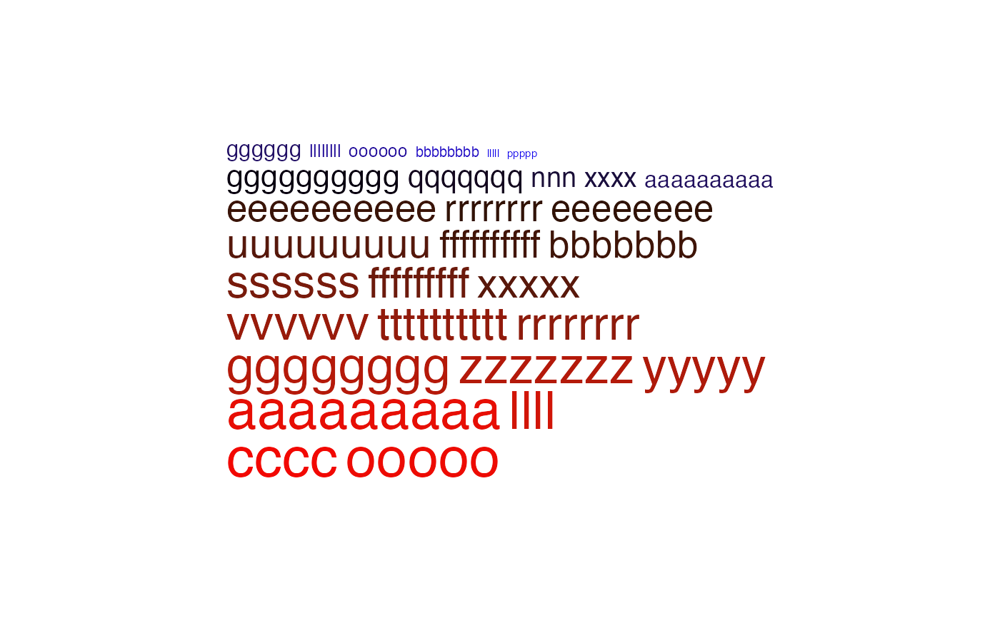

word_cloud_grob.RdA simple grob for the word cloud
word_cloud_grob(text, fontsize,
line_space = unit(4, "pt"), word_space = unit(4, "pt"), max_width = unit(80, "mm"),
col = function(fs) circlize::rand_color(length(fs), luminosity = "dark"),
add_new_line = FALSE, test = FALSE)A vector of words.
The corresponding font size. With the frequency of the words known, scale_fontsize can be used to linearly interpolate frequencies to font sizes.
Space between lines. The value can be a unit object or a numeric scalar which is measured in mm.
Space between words. The value can be a unit object or a numeric scalar which is measured in mm.
The maximal width of the viewport to put the word cloud. The value can be a unit object or a numeric scalar which is measured in mm. Note this might be larger than the final width of the returned grob object.
Colors for the words. The value can be a vector, in numeric or character, which should have the same length as text. Or it is a self-defined function that takes the font size vector as the only argument. The function should return a color vector. See Examples.
Whether to add new line after every word? If TRUE, each word will be in a separated line.
Internally used. It basically adds borders to the words and the viewport.
A grob object. The width and height of the grob can be get by grobWidth and grobHeight.
# very old R versions do not have strrep() function
if(!exists("strrep")) {
strrep = function(x, i) paste(rep(x, i), collapse = "")
}
words = sapply(1:30, function(x) strrep(sample(letters, 1), sample(3:10, 1)))
require(grid)
gb = word_cloud_grob(words, fontsize = runif(30, min = 5, max = 30),
max_width = 100)
grid.newpage(); grid.draw(gb)

# color as a single scalar
gb = word_cloud_grob(words, fontsize = runif(30, min = 5, max = 30),
max_width = 100, col = 1)
grid.newpage(); grid.draw(gb)
# color as a vector
gb = word_cloud_grob(words, fontsize = runif(30, min = 5, max = 30),
max_width = 100, col = 1:30)
grid.newpage(); grid.draw(gb)

# color as a function
require(circlize)
#> Loading required package: circlize
#> ========================================
#> circlize version 0.4.16
#> CRAN page: https://cran.r-project.org/package=circlize
#> Github page: https://github.com/jokergoo/circlize
#> Documentation: https://jokergoo.github.io/circlize_book/book/
#>
#> If you use it in published research, please cite:
#> Gu, Z. circlize implements and enhances circular visualization
#> in R. Bioinformatics 2014.
#>
#> This message can be suppressed by:
#> suppressPackageStartupMessages(library(circlize))
#> ========================================
col_fun = colorRamp2(c(5, 17, 30), c("blue", "black", "red"))
gb = word_cloud_grob(words, fontsize = runif(30, min = 5, max = 30),
max_width = 100, col = function(fs) col_fun(fs))
grid.newpage(); grid.draw(gb)
